Pranjal Singh Sesodia
I’m a third-year Mechanical Engineering student at NSUT, New Delhi, with a keen interest in robotics, actuators, mechanisms, and the process of bringing ideas to life.
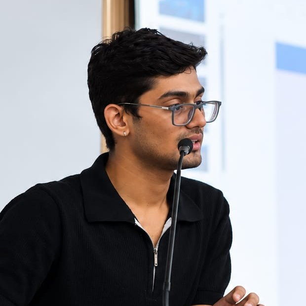
- Academic stats
- Top 9% of the class
Dept. Rank: 19/215
CGPA: 8.07/10 - Studying
- B.Tech. Mechanical Engineering, NSUT, 2024-28
- Published
- First-author review, Next Research (Elsevier), 2026
Click on the keys to interact :) (ps: with sound on, you can also use a-;)
Work
Robotics
-
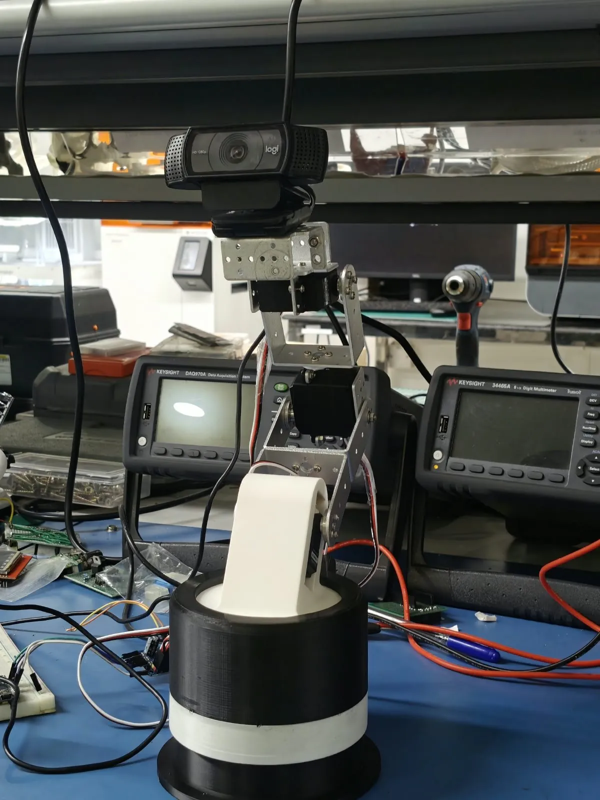
A vision-guided robot arm on servos with no encoders
A 4-DOF arm that keeps a wrist camera on target: visual servoing, a coarse-fine split between joints, a digital twin still being improved, and a 6-DOF successor in CAD.
-

A 5:1 cycloidal reducer for a hobby servo
A printed 5:1 drive for the arm’s next stage, analysed with my own contact model and a mesh-converged ANSYS check: load sharing, strength, backlash, efficiency and heat.
Biomechanics
-
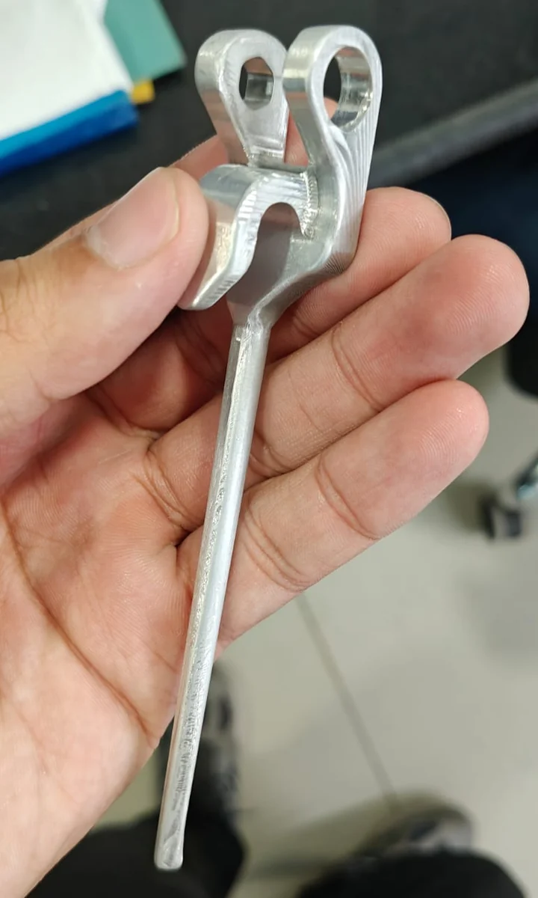
Total Elbow Implant Study
Multibody dynamics simulation found the ulna’s path jumping at 90° of flexion, so I redesigned the hinge kinematics.
-
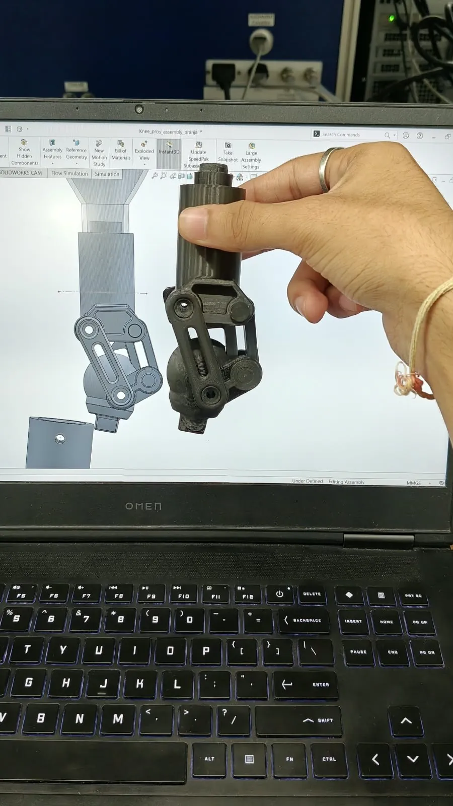
Freeing a polycentric knee that couldn’t finish its flexion
A four-bar knee that jammed, traced to its link proportions and resized until a printed prototype reached full flexion.
-
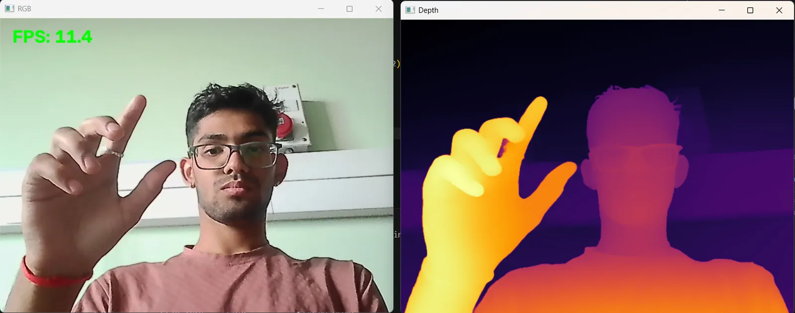
Measuring how surgeons move, with two ordinary webcams
Markerless motion capture with a 7 cm stereo pair, pose estimation through occlusions, and monocular depth.
Team and school
BAJA SAEINDIA: drivetrain and catalytic converter
Changed the drivetrain reduction from 11:1 to 8:1 for low-gradient endurance conditions: at equal engine RPM, 37.5% more output speed for 27% less wheel torque. Developed the team’s catalytic converter with lower-cost catalyst materials and analysed its manufacturing emissions in Ansys Granta Selector. The sustainability entry won 1st place nationally at the mBAJA 2026 Sustainability Event (₹30,000).
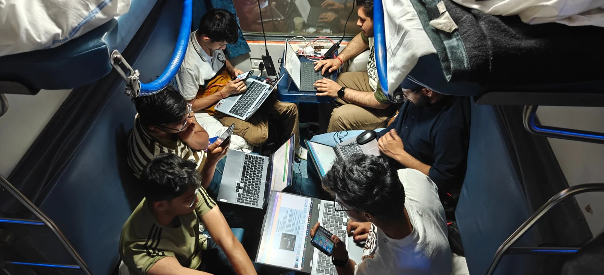
Working on the train, BAJA 2026. 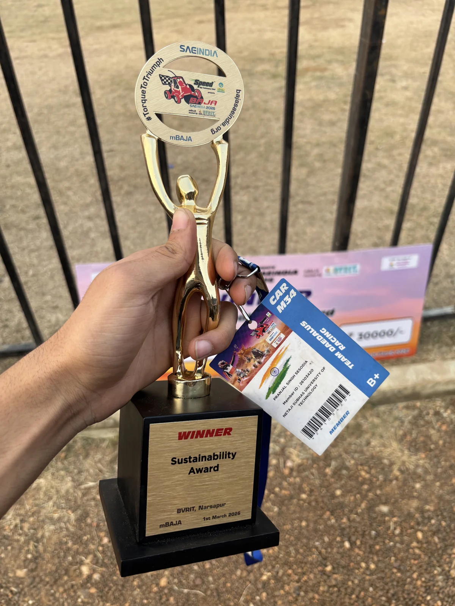
Sustainability Award, mBAJA 2026, BVRIT Narsapur. 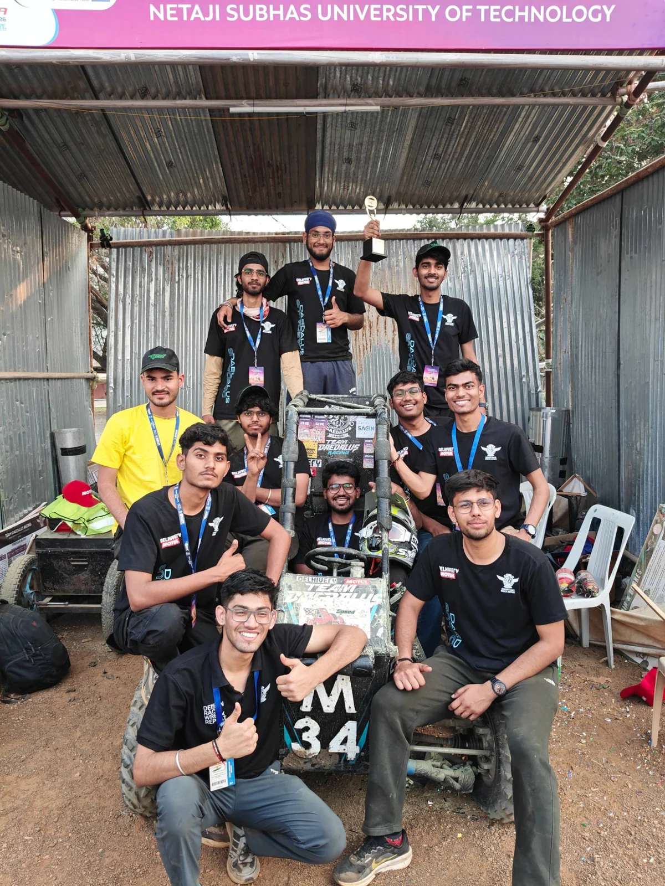
Team Daedalus Racing with car M34. 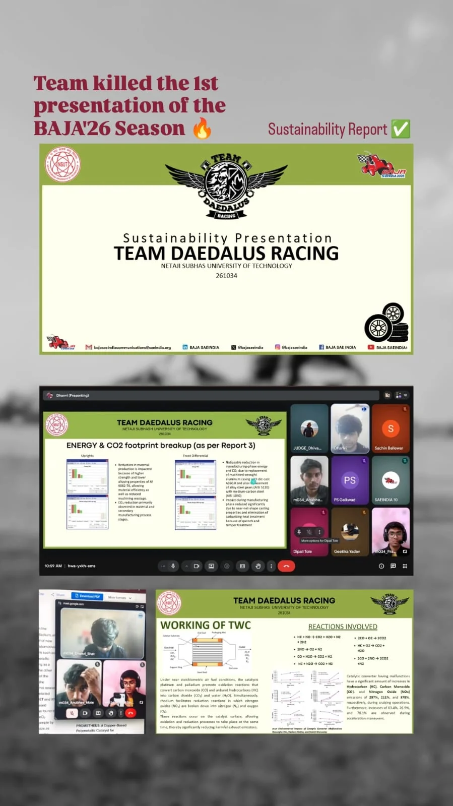
Sustainability presentation, BAJA 2026. 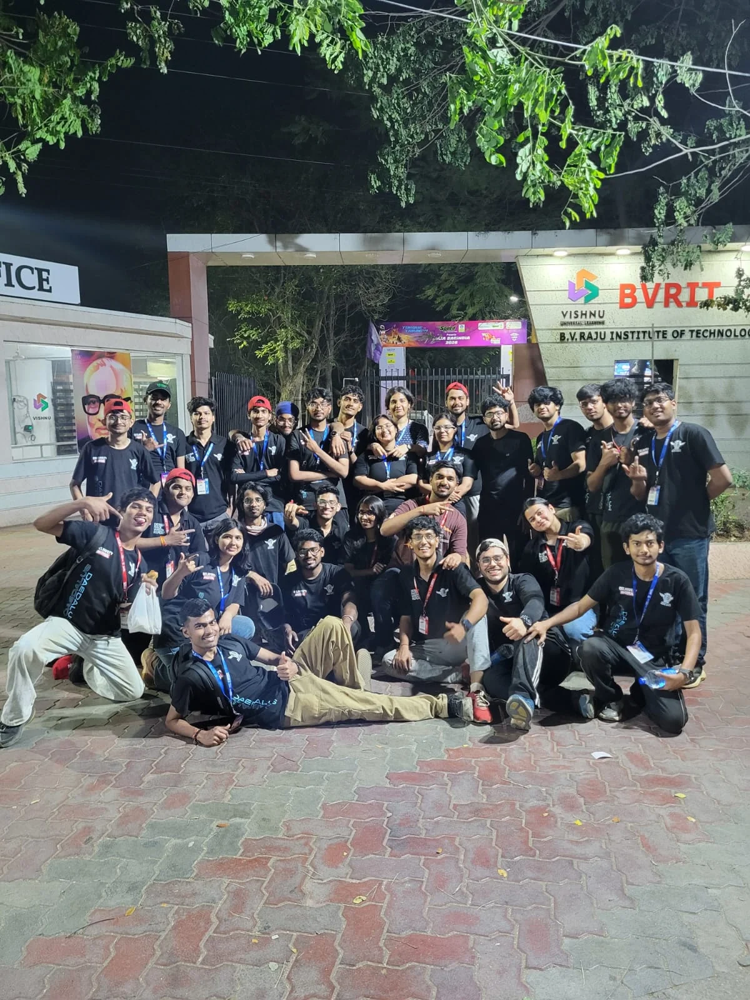
The team at BVRIT Narsapur. Teaching and mentoring
Taught 60 students in a two-day, hands-on 3D-printing workshop at the NSUT Innovation and Incubation Foundation (September 2026). Guided eight students to a Li-ion battery upcycling prototype in three weeks at Change.Makers 2.0, IIT Delhi (2025). Founded Team Daedalus’s Piston Cup Challenge and organised events at three college fests, 250+ participants each.
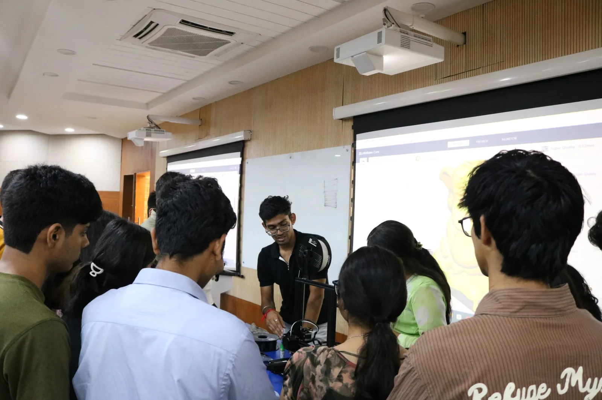
3D-printing workshop at NSUT IIF. 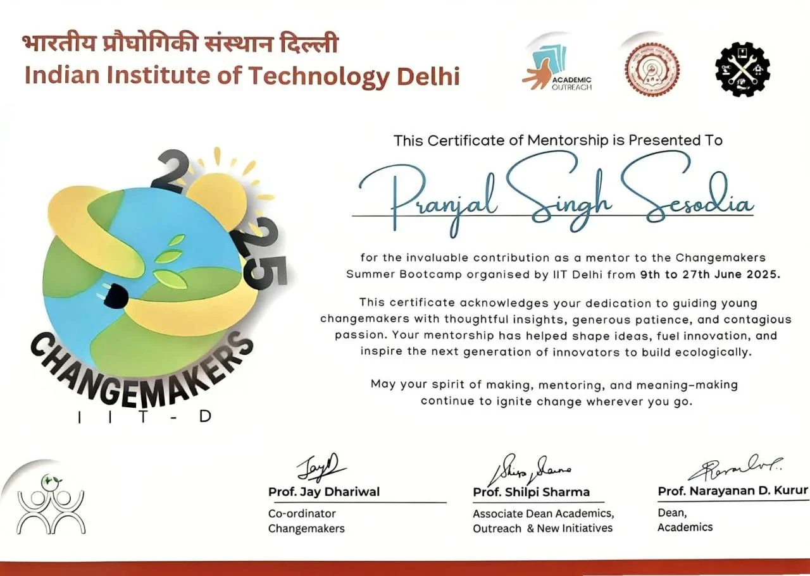
Mentorship certificate, Change.Makers 2.0, IIT Delhi. EYEAR, speech to sign language
A real-time speech-to-sign device for deaf and hard-of-hearing users, built on a Raspberry Pi in Python. Indian provisional patent filed in 2022, and presented to the Union Minister of Education. Smart India Hackathon Junior finalist; top 350 nationally in the ATL Marathon. My school named me a Patent Pioneer for it.
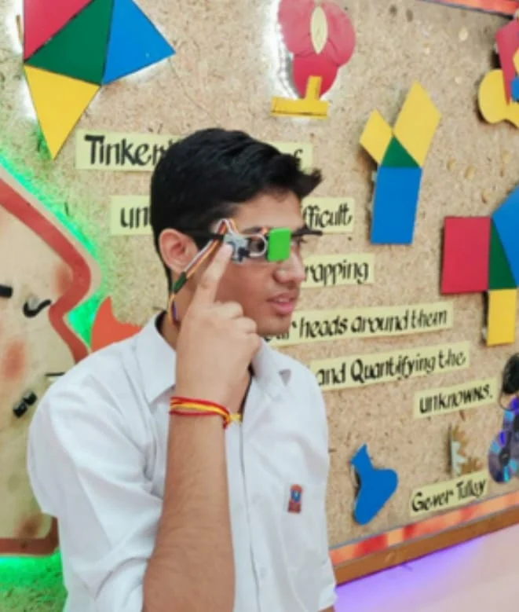
About me
I’m a mechanical engineering student who has never really grown out of taking things apart to see how they work. (I know, I know, it’s a very common line… but it’s true.)
Most days that means designing something, trying to understand mechanisms, reading about the industry, surviving classes, doing my self-paced projects, etc. But that’s just one of the ways I look at the world.
Apart from this, I love admiring the beauty of nature and capturing it through a lens. Music is my escape from reality, a way to spend some time in a world of my own.
I also love talking to people, which is probably why I’d rather explain my work in person than document it on time 🙃
If you’re curious about something I’ve built, just ask <3
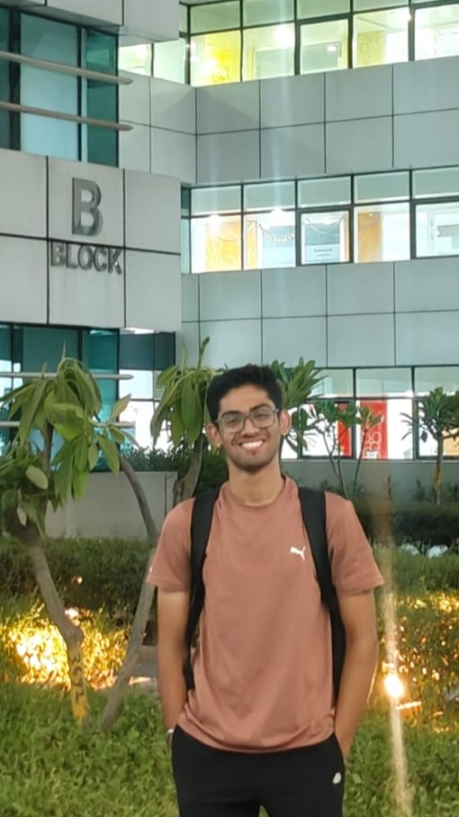
- Studying
- B.Tech. Mechanical Engineering, NSUT (formerly NSIT), 2024-28. CGPA 8.07, in the top 9% of the department.
- Coursework
- This term: Robotics, Mechanical Design, Industrial Engineering, Basics of Electric Vehicles, Advanced Machining Processes, Product Design and Development, Indian Knowledge System (IKS).
Semester IV: Theory of Machines, Control Systems, Manufacturing Processes II, Thermal Engineering II, Metrology and Statistical Quality Control.
Semester III: Fluid Mechanics and Machines (O), Strength of Materials, Manufacturing Processes I, Thermal Engineering I, Numerical Methods and Computation, Community Internship.
Semester II: Computer Programming (O), Engineering Mechanics, Materials Science and Engineering, Engineering and Machine Drawing, Mathematics II, Oscillations, Waves and Optics.
Semester I: Basics of Analog and Digital Electronics (O), Fundamentals of Electrical Engineering, Environment Science and Green Chemistry, Mathematics I, English.
O is 10/10 on NSUT’s grading scale. - Tools
- SolidWorks; ANSYS Fluent, FEA and multi-body dynamics; Ansys Granta Selector; MATLAB; PID control, visual servoing, pose estimation, stereo calibration, depth estimation; Python (OpenCV, NumPy, MediaPipe), C; Raspberry Pi, ESP32, Arduino; linkage synthesis, tolerancing, DFM; FDM and SLA printing.
- Drawn to
- Simulation for robotics; heat in actuators and grippers; gripper dynamics (contact, compliance, slip); surgical and rehabilitation devices.
- School
- Army Public School, Shankar Vihar, New Delhi: CBSE Class XII (PCM) 90%, Class X 90%.
Photography
Fourteen photographs, 2026.Point at one for its exposure; click to see it large.
More on Instagram.